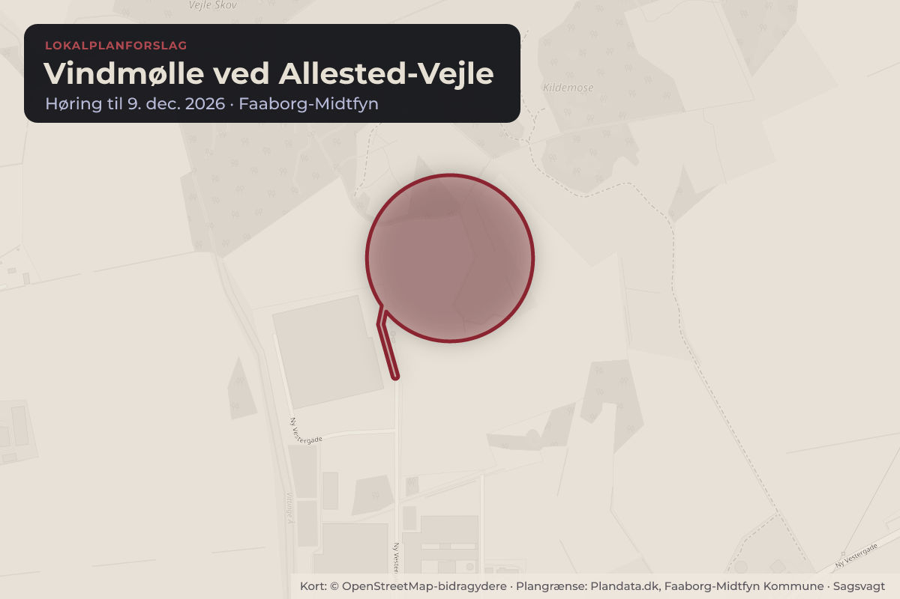
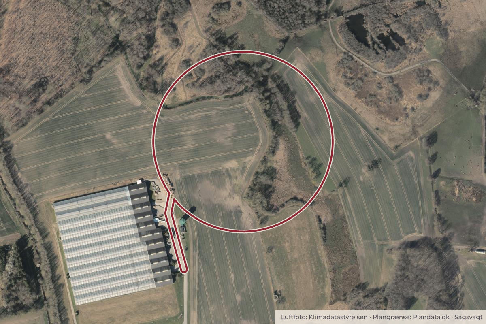

Besluttet 15. september, Teknik- Plan- og Havneudvalget, Faaborg-Midtfyn
Forslag til Lokalplan 2026-3 Vindmølle ved Allested-Vejle
Byggeri og lokalplanerErhverv og job

Kort: © OpenStreetMap-bidragydere. Plangrænse: Plandata.dk, Faaborg-Midtfyn Kommune.

Kort fortalt
- Hvem
- Teknik- Plan- og Havneudvalget, Faaborg-Midtfyn Kommune
- Hvornår
- Tirsdag 15. september 2026
- Status
- Besluttet. Udsat.
Er noget forkert her? Skriv til os
Hvad kan du gøre?
- Hold øje med høringen
- Forslaget lægger op til en offentlig høring. Når den åbner, kan alle sende et høringssvar på fmk.dk.
Læs hele sagen Kommunens egen tekst
Indstilling
Forvaltningen indstiller, at Teknik-, Plan- og Havneudvalget samt Økonomi-, Erhvervs- og
Turismeudvalget anbefaler kommunalbestyrelsen at:
1. godkende forslag til Lokalplan 2026-3
2. forslaget sendes i offentlig høring i 8 uger
3. der afholdes borgermøde i høringsperioden
Sagsfremstilling
Planens formål og indhold
Lokalplanens formål er at muliggøre etableringen af en vindmølle på op til 150 meter inden for
lokalplanens område. Lokalplanen fastlægger rammerne for etableringen af vindmøllen i
området, herunder størrelsen på denne, servicevej mv.
På Teknik- og Miljøudvalgets møde d. 20. juni 2024 blev det prioriteret at igangsætte
planlægningen for en vindmølle på op til 150 meter i tilknytning til gartneriet Easycare Plants
A/S ved Allested-Vejle. Strømmen fra vindmøllen vil blive anvendt på gartneriet.
Vindmøllen forventes at have en levetid på ca. 20–30 år. Projektet indgår i en bredere
kommunal og national indsats for at fremme produktionen af vedvarende energi og
understøtter målsætningerne for den grønne omstilling, herunder Faaborg-Midtfyn Kommunes
Klimahandleplan 2023–2050.
Planområdet for Lokalplan 2026-3 Vindmølle ved Vejle/Ny Allested er ikke omfattet af
kommuneplanrammerne, så det er nødvendigt at udlægge en ny kommuneplanramme. I
tilhørende kommuneplantillæg nr. 51 er der derfor udlagt en ny kommuneplanramme Alv.T.1,
der muliggør en vindmølle med dertilhørende tekniske installationer, herunder adgangsvej,
kranplads og arbejdsarealer, ledningstracé og teknikhus. Arealet anvendes desuden fortsat til
landbrug, mens vindmøllen står, og føres tilbage til landbrug eller natur efter nedtagning.
Zonestatus forbliver landzone.
Borgerinddragelse
Den oprindelige ansøgning om opsætning af en vindmølle på arealet blev behandlet på
kommunalbestyrelsens møde den 18. januar 2023 som punkt nr. 13, hvor det blev besluttet ”at
indkalde idéer og forslag til planlægning for at muliggøre opstilling af en vindmølle på 150 m
vest for Allested-Vejle. Herunder at afholde borger- og interessentmøde i løbet af foråret 2023,
inden der skulle træffes beslutning om eventuel igangsætning af planlægning”.
Den 8. april 2024 blev der holdt borgermødet i Allested-Vejle Fritidscenter, hvor der deltog ca.
200 borgere. Borgermødet var tiltænkt som et politisk møde, hvor man fra kommunens side
ønskede at drøfte bl.a. holdninger til igangsætning af planlægning for en vindmølle og indhente
viden fra lokalområdet.
Efter borgermødet modtog kommunen 30 skriftlige bemærkninger. På Kommunalbestyrelsens
møde den 14. august 2024, som punkt nr. 194, blev det på baggrund af resultaterne fra
borgerinddragelsen og Teknik- og Miljøudvalgets anbefaling på mødet den 20. juni 2024
besluttet at prioritere og igangsætte planlægningen for en vindmølle ved Allested-Vejle.
Høringsnotatet, der blev fremlagt til politisk behandling, og de samlede bemærkninger er
vedlagt som henholdsvis bilag 4 og 5.
Forvaltningen anbefaler, at forslaget til Lokalplan 2026-3 sendes i 8 ugers offentlig høring
sammen med forslag til Kommuneplantillæg nr. 51. Forvaltningen anbefaler, at der afholdes
borgermøde i forbindelse med høringsperioden.
Miljøvurdering
Ifølge Miljøvurderingsloven §15 kan bygherren i forbindelse med projektansøgning anmode
om, at et projekt optaget på lovens bilag 2 skal undergå en miljøvurdering uden forudgående
screening - en såkaldt frivillig miljøvurdering. Der er siden gennemført en afgrænsning af
miljøvurderingens temaer i dialog med andre relevante myndigheder og bygherre.
Miljøvurdering af planforslagene er gennemført for nedenstående temaer, og planforslagene er
vurderet samlet. De hensyn, som miljørapporten peger på, at der skal tages, er indarbejdet i
planforslagene. Det konkluderes, at realisering af planforslagenes muligheder vil resultere i:
Væsentlig positiv påvirkning af klima og ressourceforbrug
Moderat påvirkning af landskab i driftsfasen samt menneskers sundhed i anlægs- og
nedtagningsfasen
Begrænset påvirkning af menneskers sundhed i driftsfasen, menneskers levevilkår og
materielle goder, natur, kulturarv samt kumulative effekter
Ingen/ubetydelig påvirkning af grundvand
I henhold til lov om miljøvurdering af planer og programmer er der derudover udarbejdet VVMtilladelse for vindmøllen – se bilag 3.
Beslutning
Udsat.
Kilde: Faaborg-Midtfyn Kommune, Teknik- Plan- og Havneudvalget, referat fra mødet tirsdag 15. september 2026, punkt 4. Læs den originale sag hos kommunen.